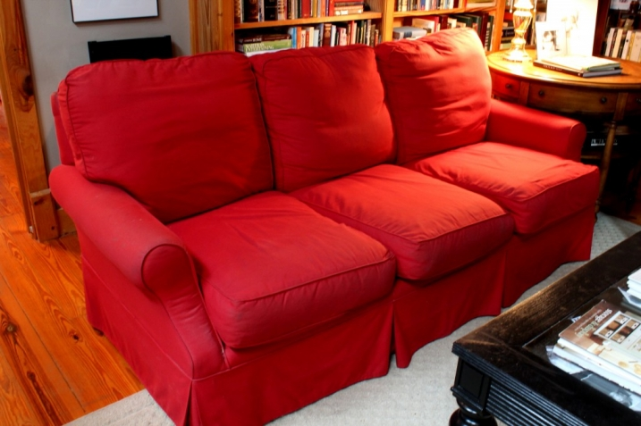
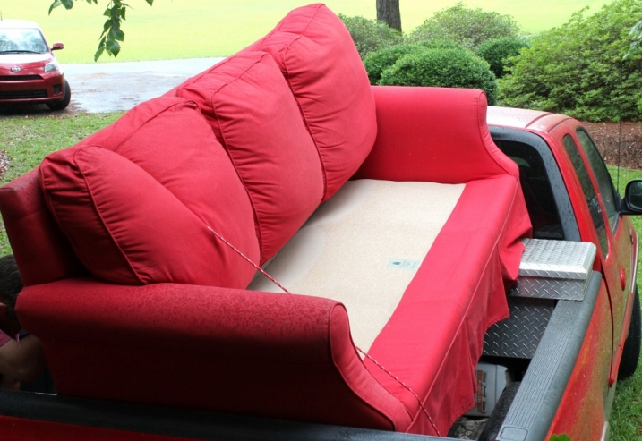

.png)
.PNG)
.PNG)
.PNG)
.PNG)
.PNG)
.JPG)
.JPG)
.PNG)
.PNG)




Once upon a time (for a very looooong time) we had a red sofa. Â It was a good sofa. Â It was very comfy, high enough at the back to not be totally dwarfed by the tall bookcases that towered over it, and it was a great color for Valentine’s Day and Christmas. Â But then…with its everyday use, the red faded some, and the cording got worn some, and the cushions got stained some, and it was time for the very loved sofa to get a new look.
So you may remember that we loaded her up in a matching truck and took her in the rain to the upholsterers so that they could wave their magic wand over her.

And wouldn’t you know it? Â While the sofa was gone, we had more company here than we have had all year. And I am not talking about the normal friends and relatives that are in and out of here all the time. Â Nope. Â I am talking about a friend from North Carolina came by that I had not seen in a long time. Relatives came that had never been here in the 17 years we have lived in this house. Â New friends of my children came to visit. Â The family room looked pretty empty and forlorn with the sofa gone (and nap time was the pits without that comfy place, too.) Â And so the upholsterers did their magic, and the sofa was ready in a month.
But then….
Dark clouds loomed…
It rained, and rained, and rained….I am sure you can see from that truck above that there is no cover on it. The red sofa may have left in the rain, but she sure wasn’t coming back in it in her new outfit. Â Besides the rain problem, there was the husband problem. Â He had to be here to help move that baby in. Â He was out of town for a week at a conference. Â Son with the fractured ankle was not going to be able to help me move it in even if I could get it here.
Finally, the upholsterers felt pity on this poor damsel in distress.  They called one morning and asked if I would like them to BRING IT TO ME in an open pick up truck before the rains started again.  Would I? You bet cha!  So bless their hearts the two wonderful guys from the land of upholstery (one of whom looked like James Taylor :)) not only brought that sofa to me in 20 minutes, but they also moved her into place and set her up in all her gorgeous cushioned goodness!
And the damsel and all her kin lived with the newly dressed sofa happily ever after. 🙂
Now that our storytime is finished, would you like to see the room with the improved sofa? Â I have not done a post on the family room since I started the blog. Â A few shots of the mantel and this Christmas morning photo is about all you have seen of it I think.

Well here is almost the same view of the sofa now.

Let me show you how she looks from all angles in the room.


I went with yellow pillows for a dose of sunshine on all these never ending rainy days. My love for red has not left, and I’m sure you will soon see red appearing in there.
Since we haven’t done a tour of this room yet, let me give you a better look around. Â This is the tabletop next to the sofa with just some greenery in a jar instead of fresh flowers for a change.

And this is the top of the cabinet on the wall behind the wicker chair.

Opposite the sofa is the fireplace and bookcase wall with its baskets full of dvd’s.

I have shown you this organization before in my baskets post, here. Â In case you missed it, you can see it better in this photo.

Here is a closer view of the vignette on the mantel..again just greenery in a jar.

To add some textural interest to the jar, I wrapped twine around it several times. Â Nothing fancy…

There are three things left that I know I want to do to this room: Â 1. Â Get a tall tree for the corner by the game table – preferably one that I won’t kill. (That may be impossible to find.) 2. Â Change out the sconce behind the chair for a floor lamp. Â (I think there is one in the attic I can use.) Â 3. Â Paint the lamp beside the stereo (not sure what color), and get a new larger shade for it. Â Those are the for sure things.
I am going to be on the lookout for huge square frames with white mats to use with black and white photos of the kids. Â I think I want to hang them (the photos, not the kids) in the big space above the sliding doors. Â I am still toying with painting the coffee table and the wicker chair a different color. Â Not sure about that yet. Â I know some of you will prefer the sofa dressed in the old red, but for me, the new neutral color allows for easy change ups in the room with just a few accessories. (My favorite thing to do. :)) Even though I love red, I am no longer bound to that color in that room.
And that concludes our tour of the family room. Â I am leaving you with another look at it again. Thunderclouds are gathering in the distance. Â Think I will go enjoy sitting in that room and listen to some James Taylor on this hot, humid afternoon.

Thanks for stopping by for a visit.


.PNG)
I just happened across your site while desperately looking for paint colors/ideas for our VERY tall walls – our whole main floor is 20 foot ceilings painted in “builder’s beige”. I may have missed it but would you be able to tell me the paint color you used? It looks great with the wood which is very similar in tone to ours. You have an amazing eye, I am jealous as I was born with zero sense of style beyond “ohh, that looks great!” when someone does it for me. I will probably be stealing a lot of ideas from you 😉
————————————————————
You steal all the ideas you want Patty! Glad you can use things from here. 🙂 The room was painted with an old K-Mart line from Martha Stewart in a color called Twine. It is no longer made, but it matches a Benjamin Moore paint color called Brandon Beige. Lowes carries a Valspar paint that is also very close (although a tad darker) called Lyndhurst Timber.
Hope this helps!
Kelly
This is my first time to your site. My friend told me about it. I am looking for a fabric to recover our sofa. Yours look so pretty and I love the neutral color. Do you share your color and type of fabric? Can’t wait to sit and look at all the other pictures.
————————————————————–
Hi Judy! Welcome! Please thank your friend for sending you over. 🙂 The fabric on our sofa is made by Kaufmann. It is called Perth, and the colorway that we have it in is Teastain. It looks more brown on the computer screen than it is in real life. It is really a good true neutral. Hope that helps!
I also hope you will enjoy the blog.
Kelly
Beautiful! Looks so restful and relaxing. Love the neutrals!
——————————————————————————
It is a very restful, relaxing, kick your shoes off kind of room. Thank you for your sweet words, Penny!
Kelly
Beautiful sofa, but an even more beautiful room! I love, love, love those tall, gorgeous bookcases!
—————————————————————————————————
I appreciate the compliments, Melanie! And I will send your sweet words about the bookcases on to my husband since he is the one who built them. I was so glad when he finally got those huge pieces secured to the wall!
Kelly
Love the color! Do you know the dimensions of the room? I am looking for a new arrangement and my family room is a rectangle, but openings seem similar to yours.
——————————————————————————
I think that color is going to work well for the room, Wanda. So glad you like it! The room has a few “jut-outs”, but it is mostly around 14 X 21. Hope that helps you with your new room arrangement. Have fun!
Kelly
I am dying to redo our family room, and the living room and the dining room and the boys room. I am dying to redo the whole house!!! You have a lovely family room! I do like the natural colors. Love the ideas of using just greens. My field flowers have all but died away. I feel your pain with the rain! I don’t think it is ever going to go away from here! I can just tell it is going to rain again this afternoon.!
—————————————————————————–
Jayne, you are wanting to do a lot! Goodness. I was like that several years after we moved in, and I had done the entire house in “nautical-mode.” So I made a plan and tackled it one space at a time. Glad you like the family room. You had such pretty flowers. I hate that they are all gone. As far as the rain goes…I bragged in my latest post about it being gone, and darn it if it didn’t start raining here just a while ago! I am beginning to think like you that it is never going away.
Kelly
Kelly,
I love the khaki color and the room is so pretty. Great job. Good story too!
Karen
—————————————————————————–
Thank you Karen! I truly was a damsel in distress (and stressing out about it, too!) before the upholstery princes came to my rescue. 🙂
Kelly
Loved the red, but as others have commented the neutral makes it easy for change ups with different color/patterns of pillows, etc. I LOVE the simple greens in the jar. I do this quite often also. Something so simple that brings a little life to a space.
—————————————————————————–
I don’t know why I never thought to do this with the greens before! Maybe it looked too much like Christmas with the greenery and the red of the sofa. LOL
Kelly
Oh Kelly, I just love this room! Your new sofa looks great, and oh how i would love a large “library” book shelf like yours for all of my books 😉
——————————————————————————
Lisa, thank you for your kind words about the room and sofa. Those bookshelves hold a lot of books and offer great storage. If we ever move out of this house,the thought of moving all those books would be overwhelming! You must have a large number of books too. I don’t know if I will ever change over to electronic books because I just love the look and feel of the real thing.
Kelly
The sofa looks beautiful! I love having tours of your house. You have inspired me to go with a more neutral color scheme in our open living room/kitchen in order to change out accessories with the seasons….or on a whim. It’s a work in progress, but it’s coming together. Personally, I like the coffee table and wicker chair in black. It’s a great contrast to the lighter neutrals and all the natural wood. But I understand wanting a change. I’m sure you will come up with something amazing that I would’ve never thought of. Oh, and that round side table….I’ve never noticed it before. It’s a very pretty piece. Thanks for sharing your beautiful home with us, Kelly!
——————————————————————————
The upholsterers did a good job with dressing the sofa, I think. I am glad you are finding ideas here that you can use Jill. You are so right about being able to change things out with the seasons and on a whim (that happens a lot here!) That round side table is one of the heaviest pieces of furniture in the room. Seriously! It was a Nautica piece called a “library table.” I fell in love with it as soon as I saw it. We didn’t have an end table for awhile, and I was using the game table as a substitute until I could find something I wanted. The game table is high, and the height worked great. So I knew I wanted a taller than the average end table. When I saw the Nautica table, I knew it was the perfect height AND it had room for storage in it. A win win all the way around. Glad you noticed it and liked it too. You have a great eye!
Kelly
I know just what you mean about company…I’ve had company twice this week, some for several days..and no sofa here either. Mine is coming home dressed in wedding white!! Love the greenery in jars, it makes me want to go snip some branches from my NineBark shrubs and put them in some water. Rest well!
——————————————————————————
Well I am glad to know that I am not the only one that makes her company sit on the floor when they visit, Rose! ha ha. A white sofa will be beautiful and so fresh looking. Whenever we get the beach house of our dreams we will have a white sofa,too. I am glad you liked the simple greenery. It stays alive longer than my flowers do. Go get your pruning shears and snip away. 🙂
Kelly
Kelly, the sofa turned out beautiful. I love the neutral color. This way you can use what ever color you want for pillows. It looks great with your walls and your drapes. To me you can never go wrong with neutrals. I love your family room. It looks like a wonderful space to relax in. Yarlette
——————————————————————————
Yarlette, thank you for your always sweet comments! The room is good for relaxing, and working, and entertaining, and napping. LOL
Kelly
I love a story with a happy ending. I am glad they took pity on you. And the room looks great… yes the neutral will be easier, but I bet you’ll miss that sexy red. 🙂
——————————————————————————
Yep, all stories (and movies, too!) should have a happy ending. I hope I don’t miss that sexy red TOO much. If I do, I can always cover it with red throw pillows! 🙂
Kelly
Awesome room and I love the new upholstery on your sofa. The bookcases are fabulous. Hugs, Marty
——————————————————————————
Marty, thank you for your sweet compliments on the room! My husband built those bookcases, and I was very happy when he finally secured them to the wall. Too much temptation for the kids (and him!) to climb up them!
Kelly
This is a fantastic family room– I know you have had many fun game nights, relaxing evenings reading, studying, doing school projects and Sunday afternoon naps in here! Thank you for the tour!! Just thinking– would you be able to draw a floor plan of your home? I can’t get the whole scheme of the layout in my mind! Also, have seen the red umbrella ? on the deck through the French doors and would love to see out there! Also, are those homegrown tomatoes on your porch table in the header picture? I almost missed the new picture I got so excited to see the new face lift on the sofa! Great post!:)
——————————————————————————
It is a well used room for sure! With the television, the fireplace, and two big tabletops it can be in high demand. LOL Glory at all your questions, girl! First, sorry but no floor plan on the blog…I have to draw the line on privacy somewhere (although I know a blog is supposed to be quite public.) Second…yes, the red umbrella is one (of 2)on the deck outside and I hope to show that area soon. I was hoping to buy some chairs for out there, but Home Depot has sold out of what I wanted,and they are nowhere to found in the entire state! Plus, it needs to stop raining and have the sun come out so that I can clean up some out there. Third, the header photo is from last year’s table. It was homegrown tomatoes from my father in law mixed with heirloom tomatoes from Fresh Market. But, my father in law DOES have wonderful tomatoes again this year. We had BLT’s at lunch yesterday with them and wedge salads with them last night at dinner. Delicious! Hope I answered all your questions. 🙂
Kelly
Love the new look (and the old) and it looks like you had your easy chairs reupholstered too. They look like they match in your picture. I’m also thinking about getting a new plant for my family room. I have seen the fiddle leaf fig plant/tree in several of the bloggers I follow pictures. I really like it. I’ve seen small ones and large ones. I have no idea where to find one in my area though.
——————————————————————————-
Lynne, thank you for the compliments on the room! The chairs were actually reupholstered several years ago, and they are in a different fabric. They are a smooth linen, and the sofa is more of a nubby linen fabric. I thought the sofa fabric was darker than the chairs, but it is amazing how close they are in color.(I really wasn’t try to match them…just be in the same “family.”) The fiddle leaf fig tree is EXACTLY what I want…but NO ONE around here has them. I don’t even know if I would be able to keep it alive if I did find one. I have heard they are rather hard to grow. I hope to find a silk one that looks real somewhere. I am usually against fake plants, but this is one time I will make an exception. Trees are expensive.
Kelly
The sofa looks wonderful as does the whole room.
I totally relate to company coming in when there is no sofa! You probably won’t see anyone for a year now that your sofa has returned. I hope that isn’t the case, but that would be my luck! 😉
Enjoy your naps!
——————————————————————————–
Oh yes, that is the way it goes! And that is the only time I have ever had the sofa missing from the room! Oh well, we managed to sit in the chairs and on the floor around the coffee table. I am glad you like the sofa and the room. I need to break the nap habit since I go back to work next week. It is going to be hard!!
Kelly
Kelly- That looks SOO good. I like neutral furniture, too. You can always add pops of color with accessories which is what I do. LOVE the room, too. You can tell you live in and love it! xo Diana
—————————————————————————–
This room is THE place we live in this house…I badly missed that sofa when it was gone! Thank you for your comment, Diana.
Kelly
That was very nice of the upholsterer to deliver and set up for you. (They must have needed the room!) Love the new dress she’s wearing, it will be much easier to accessorize. We have neutrals, and I learned that lesson a long time ago. So much easier and cheaper to bring in small items with color, than to find upholstered pieces to match each other! Love the yellow pillows. I have a white server that I’m in the process of changing to a charcoal gray. ( Lowe’s Valspar Semi-sweet, #4003-2C ) It’s a taupe-y Gray, and I’m smitten!
——————————————————————————–
That WAS nice of them! I was jumping for joy when they called. I didn’t even think about them needing the room..I thought they just needed the check.LOL Upholstered pieces are expensive, and you don’t get the opportunity to change them out very often so neutrals are definitely the way to go. I know your project will turn out great. I will look for that paint sample the next time I am in Lowes…which is usually twice a week these days!
Kelly
you know, red is my FAVORITE color….FAVORITE…..BUT, I love the neutral sofa, because you can change the color of accessories and have so many different looks, LOVE that!!!!!!!!!!!! My current sofa is red, (more dark red), but my next will be a neutral color too….your home is always beautiful!
—————————————————————————–
Linda, thank you for your compliments on the house! This sofa will look good with red pillows and accessories, so you KNOW I will using them on it,too. Pottery Barn is not carrying my cherry red pillows in the jute braid right now…boo hoo.(They will be back at Christmas though.) I am going to have to check at their outlet to see if they have any by chance. Crossing my fingers!
Kelly
So beautiful!! I love the khaki and I love that buffalo check! You have a true talent for design!
——————————————————————————
What a super sweet comment, Jennifer! You made my day, girl! I am glad you like the colors and patterns in the room.
Kelly
Beautiful transformation!!! The room looks great, I love your bookcases and your other plans for the room. I replaced a much loved and twice reupholstered khaki sofa with a new RED one 2 years ago. As much as I love red, I was having second thoughts while I waited to have it delivered. It’s style is very similar to yours and I love it…a big dose of red. I know the trend is to go to neutrals now, but I am pretending red is the new neutral ☺
——————————————————————————-
I think red worked as a “neutral” for me for many years. It wouldn’t work with pastel colors, but it was great with practically everything else…and we had it for about 10 years. You will absolutely love it at Christmas! I hope I don’t miss mine too much then.
Kelly
Kelly,
Your family room looks so attractive. I love red, but know red will look beautiful with the new fabric when you choose to use a touch of red. I’m so happy you got your sofa back without a thunder storm. Love the greens and what you did with the vases. Excellent decision !
——————————————————————————
It did start to rain right after the men left. So they timed it quite well! I am liking the greens too. It is a nice change from the flowering plants. Thanks for your words of approval!🙂
Kelly
What a perfect color! and the golden pillows tie everything together. You’ll love the versatility of a neutral background.
——————————————————————————
I know I will miss that red when Christmas rolls around here, but the versatility is what made me go with that color. I am so glad you liked the color of the sofa and the pillows.
Kelly
What a beautiful room! It has all of the elements I love in a family room! Books, photos, comfortable places to have conversations! Thanks for sharing.
—————————————————————————–
You and I both love the same elements for a room. Books and photos are everywhere in this house. Thank goodness our big comfortable place to sit is now back in the room! Thank you for your kind words about the room.
Kelly
The “new” sofa looks wonderful! You will be able to use almost any color for your pillows, throws,etc. It just adds to the fun of decorating 🙂
——————————————————————————-
I am glad you like it Susan! It certainly makes the fun even more easy to do.
Kelly
Love it!! Your style is so me….. I absolutely LOVE LOVE LOVE the black and white gingham checked chair you have somewhere in your home, I think the last time I saw it was in a post about a makeover in your daughters room…. where did you get the black and white chair??
——————————————————————————
Thank you so much Rebecca! That chair is still in my daughter’s room. It was a plaid one we bought about 10 years ago, and then I had it recovered in that check a few years back, when I had the khaki ones done in the family room. I think the check fabric was Chester in black and white from http://www.roth-tompkins.com/ (but I am not 100% positive.)
Kelly
I love the new color of the sofa. I want to get a slip made for my big red sofa either later this year or early next. Love that tall wall of bookcases.
——————————————————————————
Kim it took me a long time to commit to a fabric. There is no real good selection here,so I ended up looking online (and ordering samples.) I did go to Lewis and Sherron and also Forsyth fabrics. You have such wonderful places to shop in Atlanta. I thought about a slipcover,but I didn’t think I would really need another color. I guess the beauty would be in the ability to wash it. Thank you for your compliments!
Kelly
She looks lovely in her new clothes. All dressed up with the colorful pillows that will change for the seasons. What girl doesn’t like a new outfit and new accessories to boot.
——————————————————————————
I laughed out loud at your comment Gina! That is such a great analogy! Oh yes, the pillows will change with the seasons and the holidays. (I had my husband add shelves to a closet for me just to have a place to house all our throw pillows!) New outfit and accessories…I like that. 🙂
Kelly
Neutral sofa looks great. We also got rid of a red sofa and now have brown leather. Much easier to work with, even though we still love red as well. Your ceilings must be way up there cause your doors look so tiny. 😉 Very comfy, cozy looking room!!
——————————————————————————
I think red would be nice in the playroom, but this certainly will make decorating much easier as your brown leather does,Nancy. I believe our ceilings are around 19-20 feet. It seems like I used 6 yards of fabric per panel when I made the drapes for those windows in there.
Kelly
Just lovely Kelly!!
——————————————————————————
Thanks Arlene! I think it is definitely an improvement.
Kelly